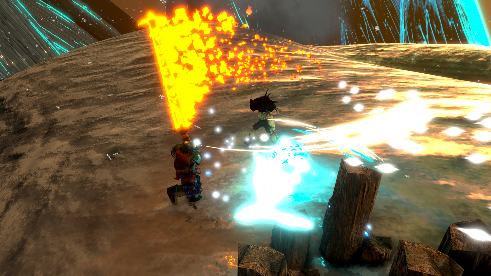
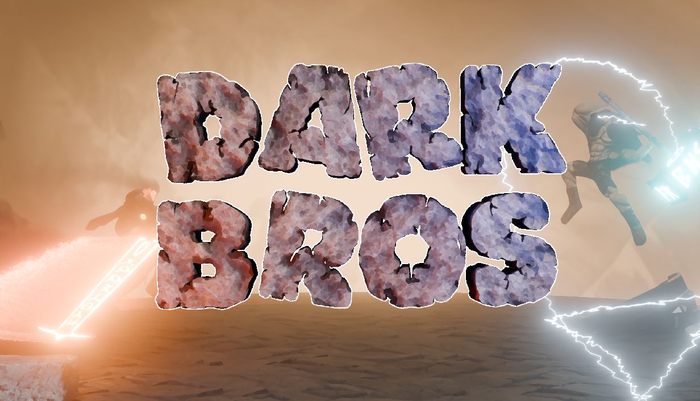

Dark Bros
Unity · C# · HLSL · Git
Free-for-all arena pvp brawler, with a focus on fast physics-based movement, attack prediction, and precise timing.
Releasing on steam in April 2026, after 1.5 years of development.
All contributions are by me, including gameplay programming, shader work, 3D models, animations, UI, steam integration, sound desing, and more.
Built with Unity Netcode for GameObjects, using Facepunch Steamworks for multiplayer and Steam integration features.
Designed with an iterative workflow, with a strong focus on frequent testing, iteration speed, and player feedback to refine the core gameplay loop.
Features
Gameplay (Note, some clips are outdated, and no longer represent the current state)
Screenshots



